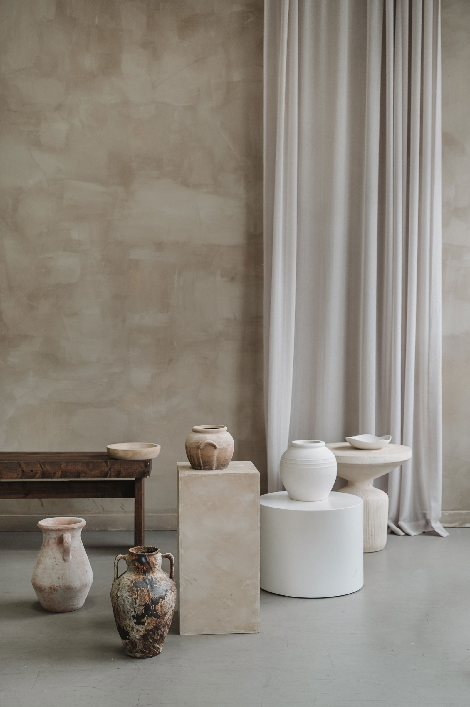
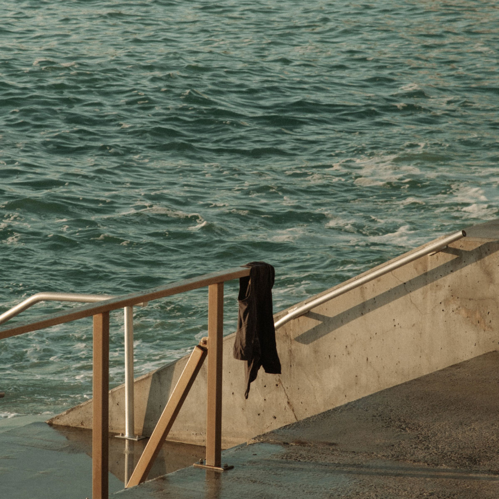
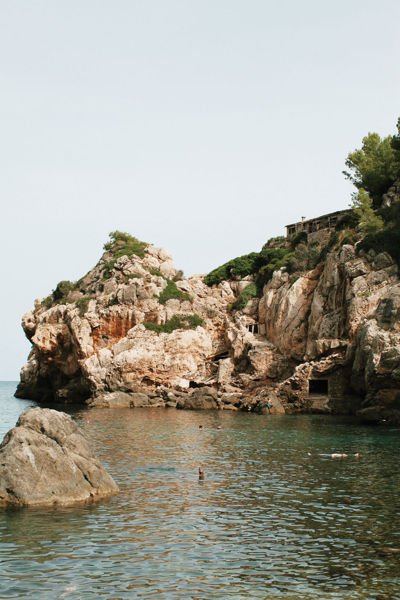

At Widhi Asih Bali Export, we believe in the harmony of form and
function.
Our pieces are more than just tableware; they are works of art,
lovingly shaped from the earth and adorned with colors and designs
that speak to the heart. We're committed to keeping the ancient art
of pottery alive, blending traditional techniques with modern
aesthetics.
Our ceramics are a testament to the skill and
creativity of our artisans. Each item is handcrafted using the
finest clay, shaped on the potter's wheel, meticulously decorated,
and then kiln-fired to perfection. This process ensures not just
stunning beauty but also durability and practicality.

From serene vases that capture the essence of nature to vibrant
dinnerware that adds a splash of color to your meals, our collection
is diverse. We cater to all tastes, offering both classic designs
and contemporary styles. Whether you're looking for something unique
for your home or a thoughtful gift, our range has something special
for everyone.
Sustainability is at the core of our
operations. We source our materials responsibly and strive to
minimize our environmental footprint in every step of our
production. By choosing Widhi Asih Bali Export, you're not just
purchasing a product; you're supporting an eco-friendly approach to
art and commerce.

We invite you to explore our collection and join our community of
ceramic enthusiasts. Follow us on [Social Media Platforms] for
updates, stories behind our creations, and insights into the
wonderful world of pottery.
Thank you for choosing [Your
Brand Name] – where each piece is a unique blend of earth, fire, and
artistry.